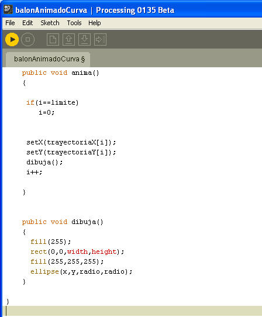

1.- Baja aquí el archivo de la Clase Pelota.
Si recuerdas en este archivo tenemos la definición de la clase Pelota y el código necesario donde se ilustra una animación donde la Pelota rebota de arriba hacia abajo. Analiza el código y agrega las siguientes funcionalidades.
a) Agrega un método (el nombre queda a tu criterio) a la clase, para que la pelota pueda moverse de el eje de las x. Valida que al tocar un borde de la ventana, esta cambie de dirección.
b) Prueba que el método funcione correctamente. Para hacerlo crea un nuevo objeto llamado p2, con posición inicial en 200,200.
c) Agrega las líneas de código necesarias para poder crear la siguiente animación.
Como te habrás dado cuenta, es recomendable la utilización de arreglos para facilitar la codificación de este ejercicio.
2.- El siguiente ejercicio lo iremos construyendo juntos, por lo que es necesario que vayas introduciendo el código e ir tratando de conceptualizarlo. El ejercicio que obtendremos al final, permite definir una curva mediante el uso de conjunto de puntos (puntos); posteriormente el se animará teniendo como ruta la curva definida anteriormente.

Agrega las siguiente líneas de código a tu programa:
Como te percatarás, hemos declarado 2 arreglos como variables de instancia de la clase BalonAnimado, por lo que la curva que definiremos será parte del Objeto.
Define los getters y setters para las variables de instancia X, Y y Radio. En este caso no declararemos este tipo de métodos para los arreglos, ya que eso lo haremos fuera de la clase, mediante el uso del mouse.
Posteriormente agrega el siguiente código a la clase:

Al código anterior utiliza métodos dentro de un método. El ejemplo ilustra el por qué debemos declarar getters y setters en problemas más complejos, debido a que hace más legible el código de nuestro programas.
Agrega el siguiente código para construir un objeto de la clase BalonAnimado. Analiza el código para que comprendas cómo es posible definir la ruta que va a seguir el objeto, mediante la definición de una curva a través del uso del Mouse.
3.- Investigación individual: El impacto que han tenido las computadoras en el arte digital, específicamente todo aquello producido mediante el uso de algún lenguaje de programación.
Soporta tu investigación, utilizando citas obtenidas en fuentes bibliográficas, en la biblioteca digital ,o bien con la opinión de un artista que haya desarrollado algún producto mediante algún lenguaje de programación. En cualquier caso, cita las fuentes utilizadas. (utilizar al menos dos fuentes de referencia)
Se recomienda que el documento generado, no exceda una longitud de 2 cuartillas, además de ilustrar con imágenes algunos ejemplos que consideres representativos.
Debes generar un documento de WORD que anexaras a un archivo compactado que incluya los 2 ejercicios anteriores.
Sección de ejercicios opcionales
4. Con base al código generado en el ejercicio 1, crea una animación que sea capaz de mostrar 5 objetos que se muevan de manera horizontal y 5 objetos que se muevan verticalmente. Si planteas correctamente la solución los cambios que debes hacer son mínimos.